PART 1.1 / CONVOLUTIONS FROM SCRATCH
Flip. Pad.
Slide. Sum.
Two-dimensional convolution is implemented: once with four explicit loops, and once with two loops plus a vectorized inner product. Both implementations flip the filter before sliding it across a zero-padded image.
Motivation
Convolution is the basis of image processing, and this part tries to explore: why the kernel is flipped, which output pixels are produced, and what values are assumed beyond the image boundary.
Implementation
The four-loop version exposes every multiply-add. The two-loop version keeps the loops over output pixels, but lets NumPy evaluate each kernel-sized window at once.
def convolve_four_loops(image, kernel, mode="same"):
padded, flipped, (output_height, output_width) = \
_prepare_convolution(image, kernel, mode)
kernel_height, kernel_width = flipped.shape
output = np.zeros((output_height, output_width))
for row in range(output_height):
for column in range(output_width):
value = 0.0
for kernel_row in range(kernel_height):
for kernel_column in range(kernel_width):
value += padded[row + kernel_row,
column + kernel_column] \
* flipped[kernel_row, kernel_column]
output[row, column] = value
return outputdef convolve_two_loops(image, kernel, mode="same"):
padded, flipped, (output_height, output_width) = \
_prepare_convolution(image, kernel, mode)
kernel_height, kernel_width = flipped.shape
output = np.empty((output_height, output_width))
for row in range(output_height):
for column in range(output_width):
window = padded[row : row + kernel_height,
column : column + kernel_width]
output[row, column] = np.sum(window * flipped)
return outputOperating on a photograph
The photograph is converted to grayscale before filtering. A normalized 9 × 9 box kernel replaces each pixel with the mean of its neighborhood; the two finite-difference kernels respond to horizontal and vertical intensity changes. Computation uses a 720-pixel-wide working image.
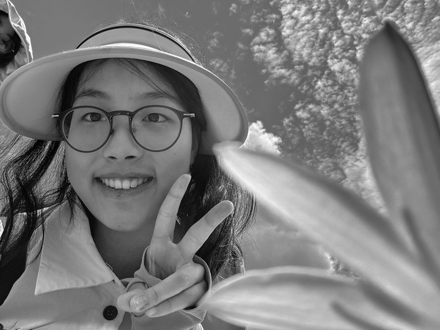
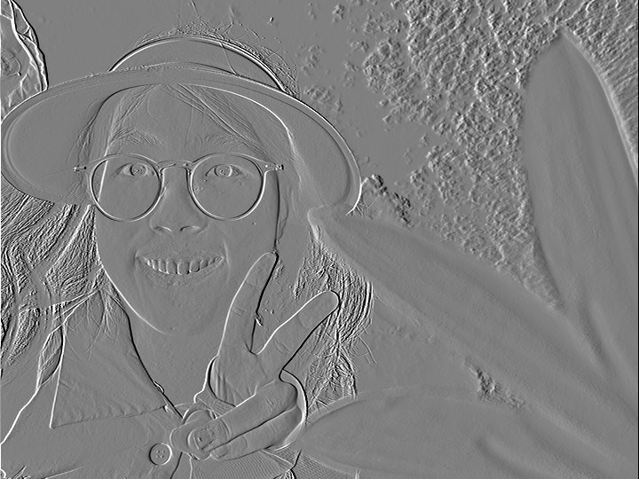
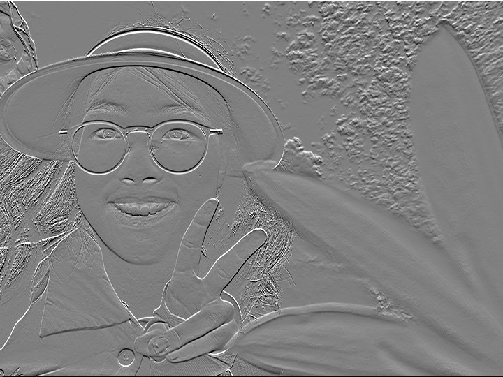
Why flip?
Cross-correlation slides a kernel unchanged, while convolution evaluates the kernel with reversed coordinates. Re-indexing the mathematical definition shows why the array used inside the sliding-window implementation must be flipped:
(I ∗ K)[i] = ∑u I[i − u]K[u] = ∑u I[i + u]K[−u]
For a local image patch [1, 2, 4] and kernel [1, 0, −1], the distinction becomes concrete:
| Operation | Kernel actually multiplied | Result |
|---|---|---|
| Correlation | [1, 0, −1] | 1 − 4 = −3 |
| Convolution | [−1, 0, 1] | −1 + 4 = 3 |
The positive convolution response agrees with the visual intuition: the patch becomes brighter from left to right.
Symmetric box and Gaussian kernels look unchanged after flipping, so an asymmetric derivative filter is the useful test case.
Correctness and runtime
Correctness is tested on a random 13 × 17 image with a non-symmetric, even-sized 4 × 5 kernel. Each NumPy output is compared pixel-by-pixel with SciPy; the table reports the largest absolute difference, so a value close to zero means the results match. Runtime is measured separately by giving all three implementations one shared random 128 × 128 image and a 9 × 9 box kernel in same mode. Each timing is the median of repeated runs.
| Implementation | same-mode correctness | full-mode correctness | Runtime |
|---|---|---|---|
| Four Python loops | 3.55 × 10⁻¹⁵ | 3.55 × 10⁻¹⁵ | 304.23 ms |
| Two loops + NumPy | 3.55 × 10⁻¹⁵ | 3.55 × 10⁻¹⁵ | 63.32 ms |
| SciPy convolve2d | Reference | Reference | 1.88 ms |
These are median wall-clock measurements on this machine and will vary by computer.
Vectorizing the inner 9 × 9 calculation makes the two-loop version several times faster than four loops. SciPy is tens of times faster again because the remaining loops also run in compiled code.
Boundary handling
Zero padding is used because in SciPy boundary="fill" means that every location beyond the image boundary is supplied with one constant value, and fillvalue=0 chooses zero as that constant. Together, they make SciPy treat the outside of the image as black, exactly like the NumPy implementation.
Matching the same rule makes the correctness comparison meaningful.
For same mode, only enough zeros are added to preserve the input dimensions; for full mode, kernel_size − 1 zeros are added on every side so every partial overlap is represented.
The bright line at the top of the y-derivative image indicates a transition from the dark padded boundary into the brighter photograph.
PART 1.2 / FINITE DIFFERENCE OPERATOR
Edges detection.
Convolving the cameraman image with Dx = [1, 0, −1] and Dy = DxT isolates change in two perpendicular directions and use their Euclidean length for a direction-independent measure of edge strength.
Motivation
Objects are not defined by a particular gray value, shadow may cause the same object can be bright on one side and dark on another. Boundaries are better indicated by rapid spatial change, which could be measured by partial derivatives along each axis.
Implementation
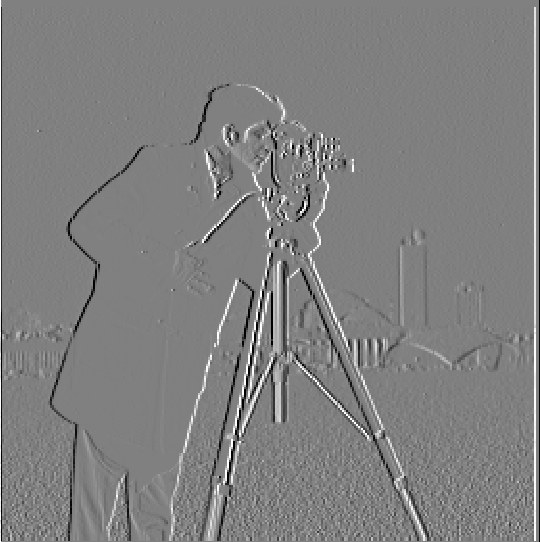
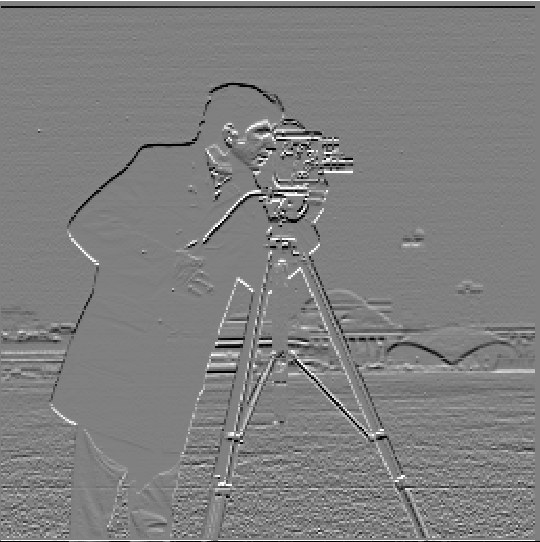
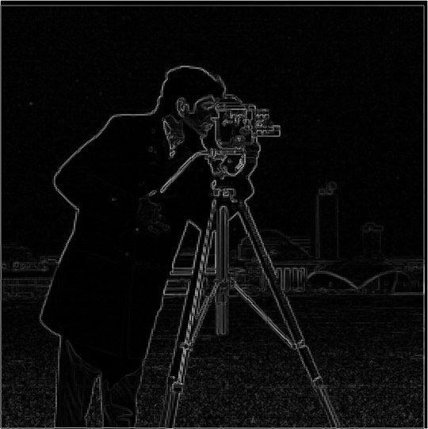
Threshold choosing
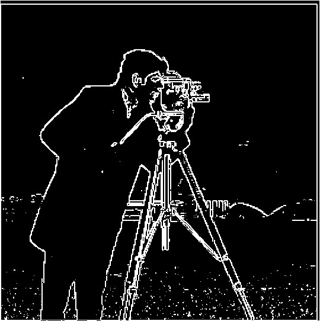
CHOSEN THRESHOLD · 0.20
Keep structure, reject texture.
The silhouette, face, camera, tripod, and horizon remain legible while most weak texture disappears. A few isolated high-contrast grass pixels remain; removing all of them would also erase meaningful fine edges around the camera.
PART 1.3.1 / GAUSSIAN SMOOTHING
Suppress noise
before differentiating.
In this section, I applied Gaussian low-pass filtering to filter out the rapid intensity change. It is then followed by the same derivative and thresholding pipeline.
Motivation
Differentiation amplifies high-frequency content, which includes useful boundaries but also sensor noise and fine texture. A Gaussian attenuates those unstable frequencies before the derivative is taken. Its separability also makes the two-dimensional kernel easy to construct from one-dimensional samples.
Implementation
gaussian_1d = cv2.getGaussianKernel(GAUSSIAN_SIZE, GAUSSIAN_SIGMA)
gaussian = gaussian_1d @ gaussian_1d.T
blurred = convolve2d(
cameraman, gaussian, mode="same",
boundary="fill", fillvalue=0,
)
smooth_dx = convolve2d(
blurred, DX, mode="same", boundary="fill", fillvalue=0
)
smooth_dy = convolve2d(
blurred, DY, mode="same", boundary="fill", fillvalue=0
)
smooth_magnitude = gradient_magnitude(smooth_dx, smooth_dy)
smooth_edges = smooth_magnitude >= SMOOTH_THRESHOLD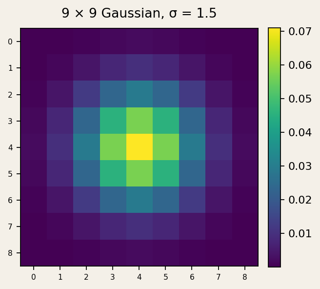
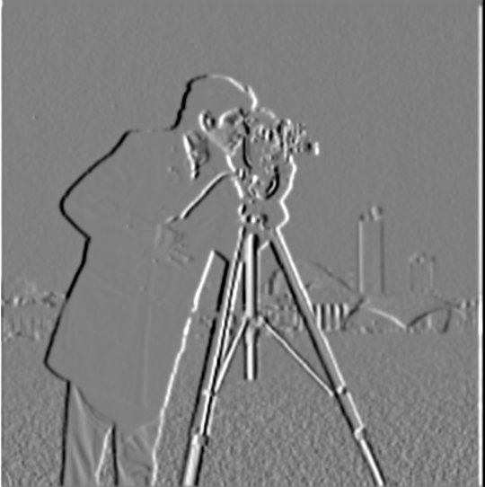
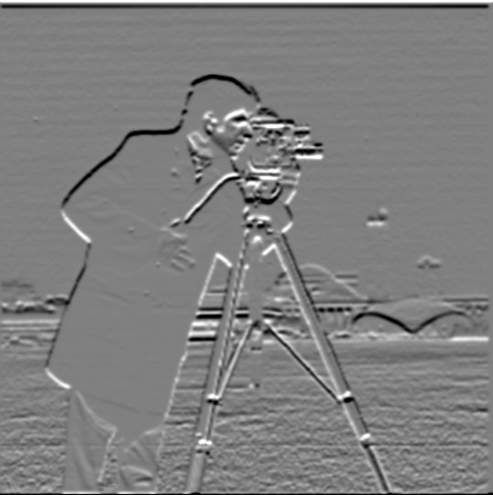
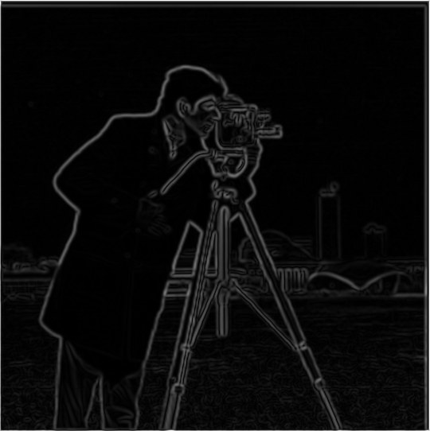
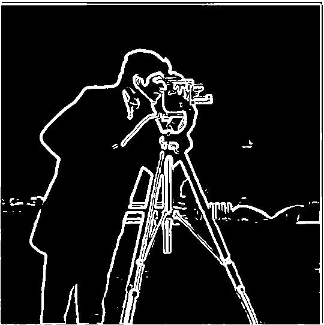
 Gaussian first
Raw finite difference
Gaussian first
Raw finite difference
Drag to compare. Gaussian smoothing removes isolated grass responses and joins fragmented contours. The tradeoff is thicker, slightly less precisely localized edges, so the post-smoothing threshold is lowered to 0.10.
PART 1.3.2 / DERIVATIVE OF GAUSSIAN
Merging two filters.
Convolution is associative. In this section, I merge the two pipeline to create derivative-of-Gaussian filters.
Motivation
Smoothing and differentiation are both linear, shift-invariant operations. Associativity allows them to be combined into a single reusable filter per axis. The one-pass form clarifies the mathematics and avoids storing a separate blurred intermediate when only the derivatives are needed.
Implementation
(I ∗ G) ∗ Dx = I ∗ (G ∗ Dx)
(I ∗ G) ∗ Dy = I ∗ (G ∗ Dy)
dog_x = convolve2d(
gaussian, DX, mode="full", boundary="fill", fillvalue=0
)
dog_y = convolve2d(
gaussian, DY, mode="full", boundary="fill", fillvalue=0
)
dog_dx = convolve2d(
cameraman, dog_x, mode="same", boundary="fill", fillvalue=0
)
dog_dy = convolve2d(
cameraman, dog_y, mode="same", boundary="fill", fillvalue=0
)
dog_magnitude = gradient_magnitude(dog_dx, dog_dy)
dog_edges = dog_magnitude >= SMOOTH_THRESHOLD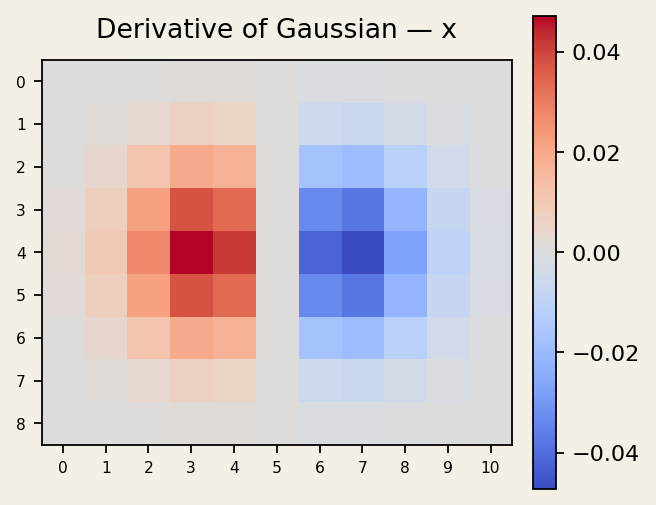
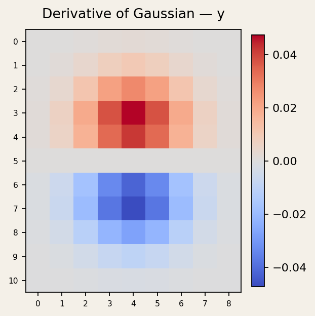
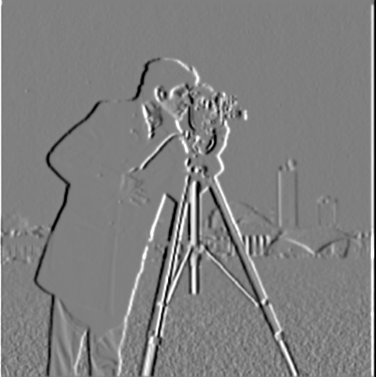
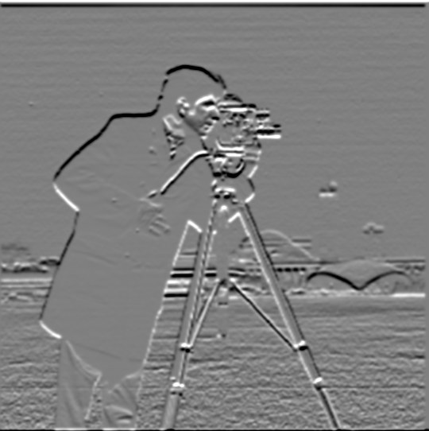
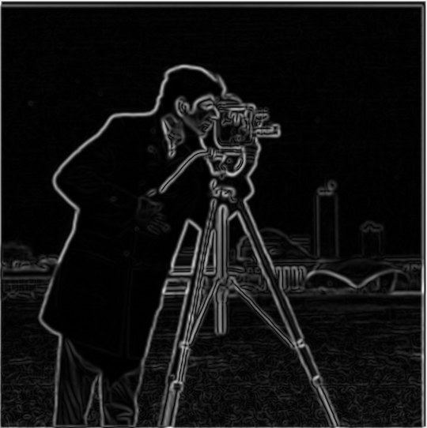
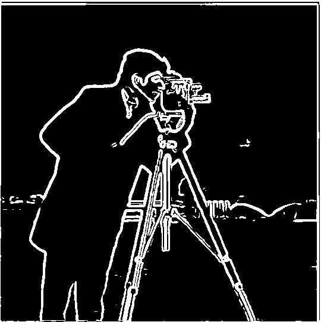
Correctness
There are now two paths to the same x derivative; the comparison below verifies that they agree.
(I ∗ G) ∗ DxI ∗ DoGxTo verify the result, the two output images are subtracted pixel by pixel. A difference of zero means they agree exactly. Because two-pass filtering pads the image twice while one-pass filtering pads it once, the artificial outer frame is excluded and the numerical comparison is made on the shared interior.
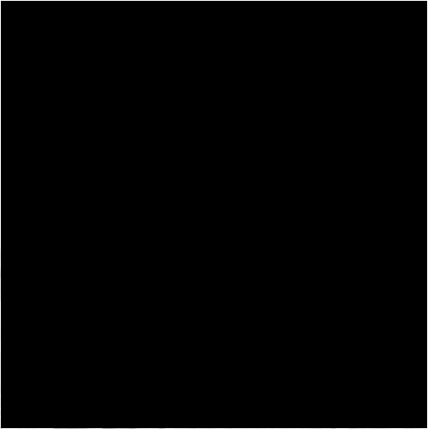
INTERIOR NUMERICAL CHECK
8.80 × 10⁻¹⁷ mean absolute error 7.49 × 10⁻¹⁶ maximum absolute errorBoth values are effectively zero: the two paths produce the same interior image up to floating-point rounding. The difference image is strongly amplified for visibility; it does not represent a visually meaningful disagreement.
PART 1.4 / BELLS & WHISTLES
Direction representation.
Gradient magnitude says how strongly intensity changes; orientation says where it changes toward. Hue is used to represent that orientation on a cyclic color scale, with value representing the magnitude.
Motivation
Magnitude alone cannot distinguish a vertical boundary from a horizontal or diagonal one. Orientation supplies that missing geometry and is useful for shape description, feature matching, and histogram-based descriptors. The HSV space is a great ides, and Hue is a natural display because both direction and color are cyclic: −π and π meet at the same point!
Implementation
-
01Reduce
Let
x = Ixandy = Iy. The ratiomin(|x|,|y|) / max(|x|,|y|)is always in[0,1]. The reduction does not forget which component is larger:y_is_dominant = |y| > |x|is recorded separately and used during restoration. -
02Approximate
A low-degree polynomial approximates arctangent only on
[0,1]. Keeping the input bounded avoids very large ratios whenxis near zero and retains a small calculation error. -
03Restore
If y is dominant, reflect the reference angle with
π/2 − base; then use the signs of x and y to restore the quadrant.
For example,Ix=2andIy=5giveratio=0.4. Since y is dominant and both signs are positive, the restored angle isπ/2 − atan(0.4) ≈ 68.2°. -
04Color
Map the restored angle from
[−π,π]to cyclic hue. Gradient magnitude controls brightness, but only pixels with‖∇I‖ ≥ 0.10keep that color; weaker responses are set to black.
def manual_atan2(y, x):
y, x = np.broadcast_arrays(
np.asarray(y, dtype=np.float64),
np.asarray(x, dtype=np.float64),
)
abs_x, abs_y = np.abs(x), np.abs(y)
y_is_dominant = abs_y > abs_x
larger = np.maximum(abs_x, abs_y)
ratio = np.divide(
np.minimum(abs_x, abs_y), larger,
out=np.zeros_like(larger), where=larger > 0,
)
base = (np.pi / 4.0) * ratio \
- ratio * (ratio - 1.0) \
* (0.2447 + 0.0663 * ratio)
first_quadrant = np.where(
y_is_dominant, np.pi / 2.0 - base, base
)
angle = np.where(
x >= 0,
np.where(y >= 0, first_quadrant, -first_quadrant),
np.where(y >= 0, np.pi - first_quadrant,
first_quadrant - np.pi),
)
return np.where((x == 0) & (y == 0), 0.0, angle)def orientation_rgb(dx, dy, threshold=0.0):
magnitude = gradient_magnitude(dx, dy)
scale = max(np.percentile(magnitude, 99.0),
np.finfo(float).eps)
value = np.clip(magnitude / scale, 0.0, 1.0) ** 0.55
value = np.where(magnitude >= threshold, value, 0.0)
hue = (manual_atan2(dy, dx) + np.pi) / (2.0 * np.pi)
return hsv_to_rgb(hue, np.ones_like(hue), value)Why did dark regions still have color?
A gradient in a flat-looking region is usually small, but rarely exactly zero because of texture, compression, and numerical variation. The earlier visualization assigned a hue to every nonzero gradient and used the exponent 0.55 to make weak magnitudes easier to see, so faint colors remained outside strong edges. For an edge-orientation visualization, the clearer choice is to apply the same 0.10 edge mask.
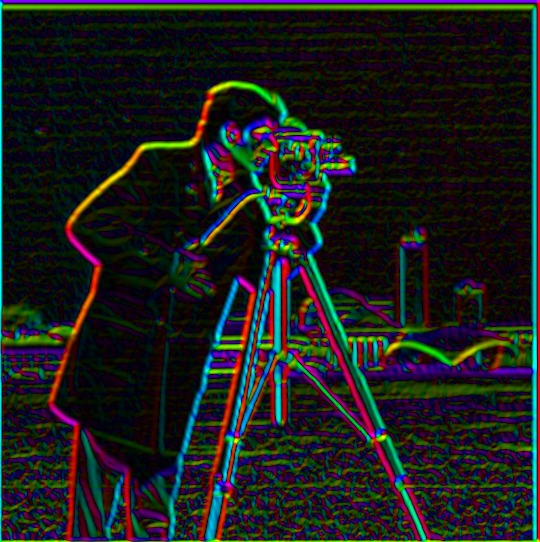
CYCLIC DIRECTION KEY
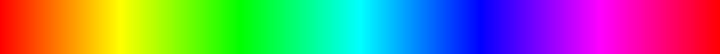
Both views use hue for direction and HSV value for normalized gradient magnitude, so stronger changes appear brighter. The left view retains every nonzero response; the right view additionally sets pixels below 0.10 to black.
Correctness
The orientation image above is produced entirely by manual_atan2. Afterward, np.arctan2 is called once as a reference answer—not as an input to the algorithm. The angular difference is wrapped back into [−π,π] so that equivalent directions near the wrap point, such as −π and π, are not mistakenly treated as far apart. Error is measured only on retained edge pixels in the valid interior.
reference = np.arctan2(dog_dy, dog_dx)
wrapped_error = np.abs(
((manual_atan2(dog_dy, dog_dx) - reference + np.pi)
% (2 * np.pi)) - np.pi
)
edge_mask = dog_magnitude >= SMOOTH_THRESHOLD
edge_error = wrapped_error[interior][edge_mask[interior]]The retained edge pixels have a mean angular error of 0.051° and a maximum angular error of 0.086°.
PART 2.1 / SHARPENING
Give the edges
more weight.
Unsharp masking does not invent new detail. By extracting rapid intensity changes and adding a scaled copy, the image becomes sharper.
In this section, I implement such sharpening technology can discuss the resharpening result.
Motivation
A Gaussian is a low-pass filter: slowly varying structure survives while fine detail is attenuated. Subtracting that smooth image from the original isolates a high-frequency residual. Strengthening this residual increases local contrast around boundaries—the visual cue interpreted as sharpness.
Here δ is an impulse with a single central value of one, so the unsharp kernel is (1 + α)δ − αGσ. Its coefficients sum to one, preserving constant regions.
Implementation
def unsharp_mask(image, kernel_size, sigma, amount):
gaussian = gaussian_kernel(kernel_size, sigma)
impulse = np.zeros_like(gaussian)
impulse[kernel_size // 2, kernel_size // 2] = 1.0
unsharp_filter = (1.0 + amount) * impulse - amount * gaussian
blurred = convolve_color(image, gaussian)
high_frequencies = image - blurred
sharpened = convolve_color(image, unsharp_filter)
return (blurred, high_frequencies,
np.clip(sharpened, 0, 1), unsharp_filter)The Taj Mahal uses a 13 × 13 Gaussian with σ = 2.0. Results are shown at α = 1.5 and a stronger α = 3.0. Symmetric boundary extension avoids introducing a black frame before filtering. The high-pass image below is shifted around middle gray only for display: gray means zero residual, bright values are positive, and dark values are negative.
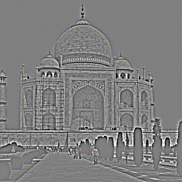
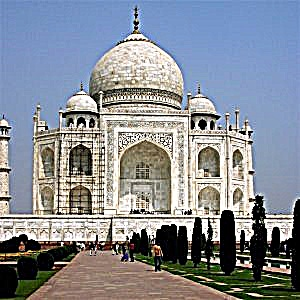
At α = 1.5, the façade lattice, dome outline, and trees gain stronger separation while the sky remains nearly unchanged. At α = 3.0, the same structures become more pronounced, but bright and dark overshoot around boundaries begins to look artificial.
Can edges extracted after blur recover lost detail?
A sharp raccoon image provides a controlled evaluation. It is first blurred with a 17 × 17, σ = 2.8 Gaussian, then sharpened with the matching unsharp scale and α = 2.0.
FFT evidence
The Fourier magnitude makes the loss measurable. Before the FFT, the grayscale image mean is removed and a two-dimensional Hann window reduces artificial frequencies from opposite image borders. All three plots use one shared log-magnitude display scale, so we can directly compare the missing high-frequency content.
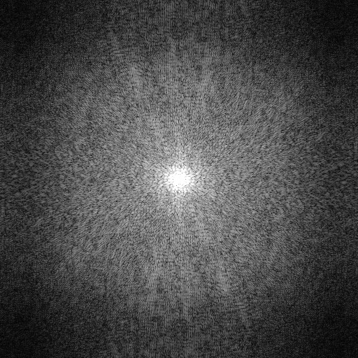
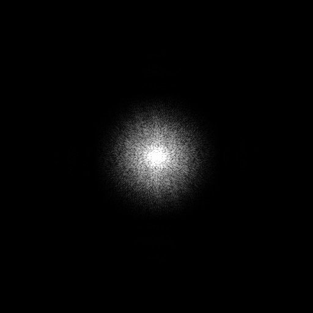
Ehigh = ∑√(fₓ² + fᵧ²) ≥ 0.10 |F(fₓ, fᵧ)|²
High-frequency energy is summed outside a radial cutoff of 0.10 cycles/pixel and reported relative to the original. MAE measures spatial-domain difference from the same original image.
| Image | High-frequency energy | MAE to original | Interpretation |
|---|---|---|---|
| Original | 100.00% | 0.0000 | Reference detail |
| Gaussian blurred | 0.39% | 0.0291 | Most fine detail removed |
| Re-sharpened | 2.86% | 0.0253 | Remaining edges amplified |
Therefore, sharpening a blurred image is not completely ineffective, but it is not inversion. The recovered image contains only about 2.86% of the original high-frequency energy. Unsharp masking amplifies the weak transitions that survived the blur; it cannot infer the missing fur structure. Raising α further mainly creates halos and amplifies noise.
PART 2.2 / HYBRID IMAGES
Hybrid Images.
A hybrid image combines the smooth structure of one subject with the fine detail of another. Nearby, high frequencies dominate perception; far away, the low-frequency subject takes over.
I also provide a FFT-view of understanding hybrid images.
Motivation
Human vision does not weight every spatial frequency equally at every distance. By deliberately combining a low-pass component from picture A with a high-pass component from picture B, we get two views in onr picture.
Implementation
Corresponding eyes are first mapped to the same position, separation, and angle. This similarity alignment matters because the two frequency bands must support the same perceptual grouping. The aligned images are then filtered separately and added.
L = GσL ∗ Ilow
H = Ihigh − GσH ∗ Ihigh
Ihybrid = clip(L + H)
def hybrid_components(low_image, high_image,
low_size, low_sigma, high_size, high_sigma):
low = convolve_color(
low_image, gaussian_kernel(low_size, low_sigma)
)
high_blur = convolve_color(
high_image, gaussian_kernel(high_size, high_sigma)
)
high = high_image - high_blur
return low, high
hybrid = np.clip(low + high, 0.0, 1.0)Example 1: meow?meow?
Derek supplies the low frequencies and remains upright. His full 732 × 1024 photograph is resized—not cropped—to a 366 × 512 working canvas with the same aspect ratio. Nutmeg is rotated and scaled so the eyes coincide with Derek's.
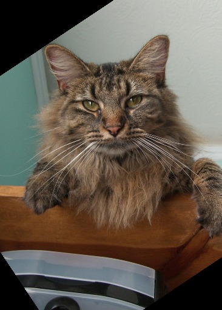
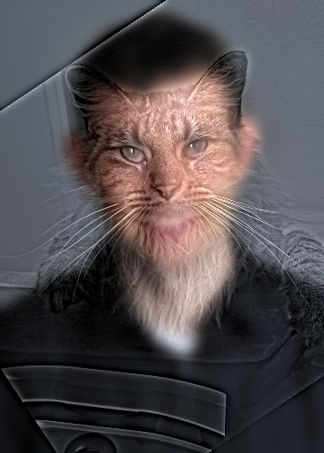
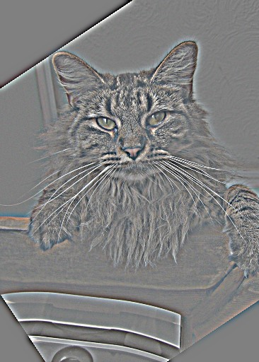
Example 2: a classic one
Marilyn supplies the low frequencies with σL = 8.0; Einstein supplies the high frequencies with σH = 3.0. A smaller high-pass scale keeps Einstein's fine facial evidence nearby without letting his broad face shape overwhelm Marilyn at a distance.
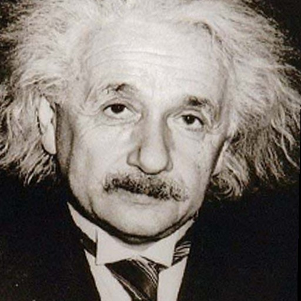
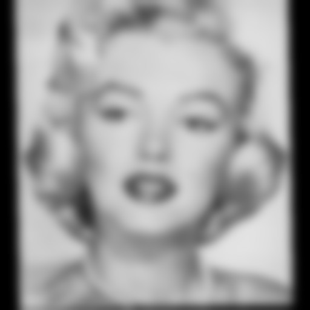
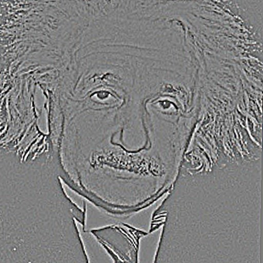
Frequency analysis
Each plot shows log(1 + |FFT|) with zero frequency shifted to the center. Marilyn's low-pass spectrum contracts into a bright central region. Einstein's high-pass spectrum loses that center while retaining outward structure. Their hybrid contains both signatures.
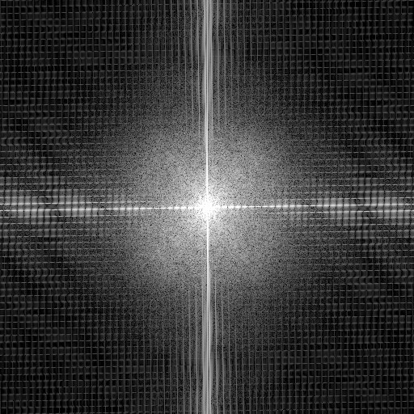
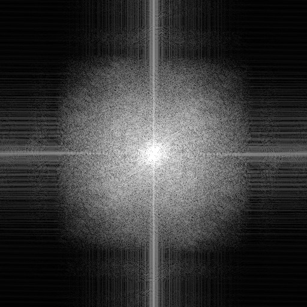
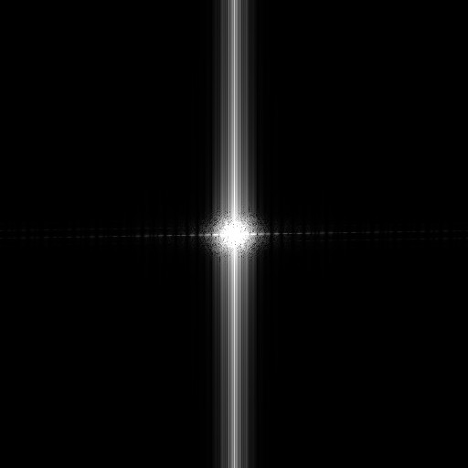
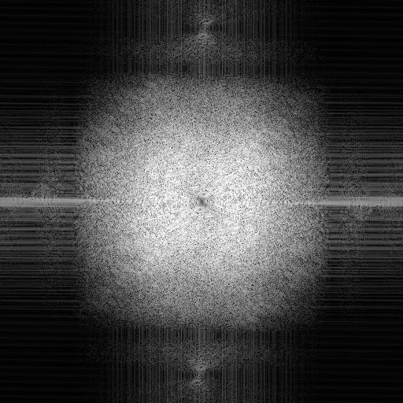
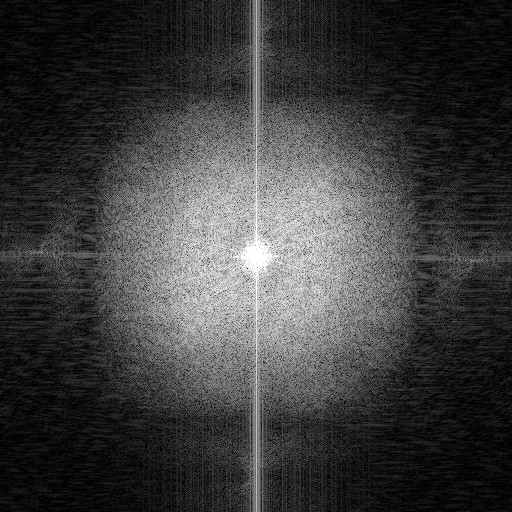
Example 3: Raccoon & Wolf
The eye landmarks again define a common center, scale, and rotation. Wolf contributes the broad low-frequency head shape (σL = 9.0), while raccoon contributes the mask, whiskers, and fur boundaries (σH = 4.5).
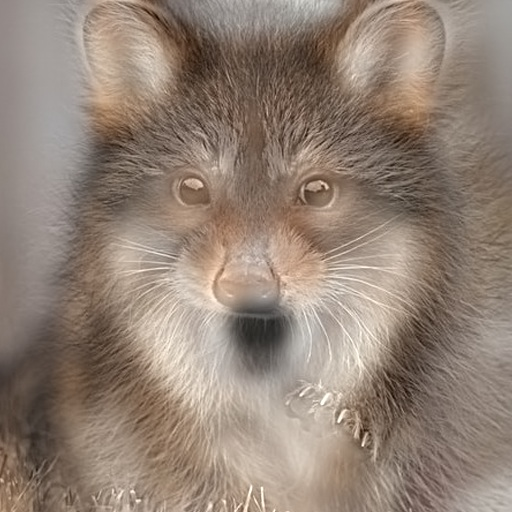
Color study
Color can be retained independently in either frequency band.
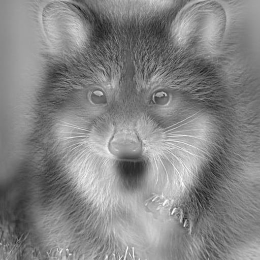

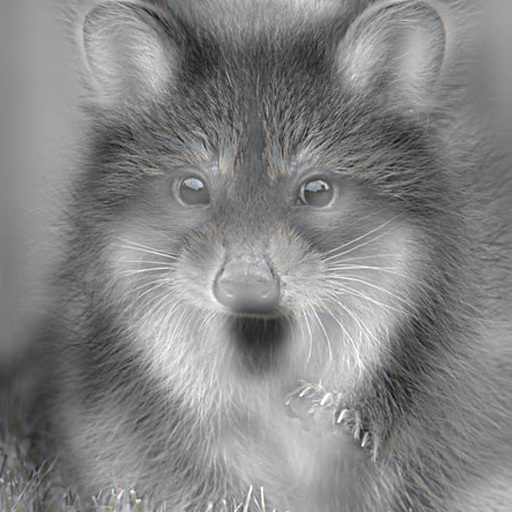
Why do the results look similar in pairs?
Because the high-pass raccoon component contains very little chroma. Its fur, whiskers, and mask edges change the red, green, and blue channels by nearly the same amount, so converting that component to grayscale changes mostly imperceptible color residuals. Human vision is also less sensitive to rapidly alternating color than to high-frequency luminance.
The two pairings differ only in whether color is enabled for the high-frequency band. That switch changes the mean pixel value by only about 0.0034. In comparison, enabling color in the smooth low-frequency band changes the image by about 0.0412—roughly twelve times as much.
| Color toggle | Compared results | Mean pixel change | Visual effect |
|---|---|---|---|
| High band | Neither → High only | 0.0034 | Barely visible edge chroma |
| Low band | Neither → Low only | 0.0412 | Broad, clearly visible color |
PART 2.3 / GAUSSIAN AND LAPLACIAN STACKS
Different resolution
different details.
A Gaussian stack separates progressively smoother structure while preserving the original dimensions at every level. Subtracting adjacent Gaussian levels produces a Laplacian stack whose bands add back to the original image.
Motivation
Continuously adding Gaussian blur to an image like the Gaussian pyramid adjusts the images's resolution so that we can seperate the details of different frequencies. The details are attained by subtraction, which acts like the residual, allowing perfect recovery and blending on seperate layers.
Implementation
The Gaussian stack starts with the unmodified image. Incremental Gaussian standard deviations are 1, 2, 4, 8 pixels; because Gaussian variances add, the cumulative effective values are 0, 1.00, 2.24, 4.58, 9.22. The Laplacian levels are adjacent differences between those scales, and the last Gaussian level is retained as the low-frequency residual.
G₀ = I, Gₗ = Gaussian(Gₗ₋₁, σₗ)
Lₗ = Gₗ − Gₗ₊₁, L₄ = G₄
I = ∑l=04 Lₗ
def gaussian_stack(image, levels=5, base_sigma=1.0):
stack = [image]
for level in range(1, levels):
sigma = base_sigma * (2 ** (level - 1))
blurred = gaussian_blur(stack[-1], sigma)
stack.append(blurred) # same H × W; no subsampling
return stack
def laplacian_stack(gaussian_levels):
bands = [gaussian_levels[i] - gaussian_levels[i + 1]
for i in range(len(gaussian_levels) - 1)]
return bands + [gaussian_levels[-1]]Four stack views
Each horizontal row moves left to right through increasing effective σ while keeping the same spatial dimensions. Signed Laplacian bands are displayed around middle gray: gray is zero, brighter pixels are positive, and darker pixels are negative. Apple and Orange share one display scale at each level so their responses remain comparable.
01 Apple · Gaussian


02 Orange · Gaussian


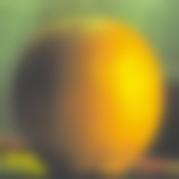
03 Apple · Laplacian
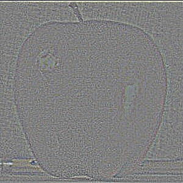
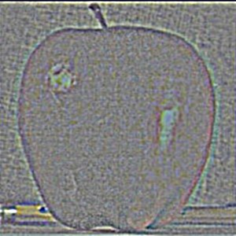
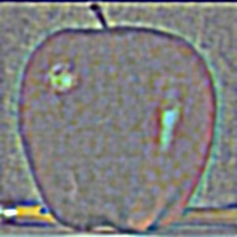
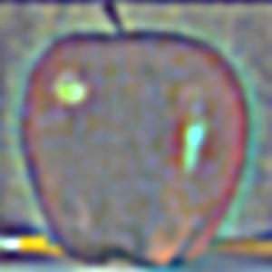
04 Orange · Laplacian
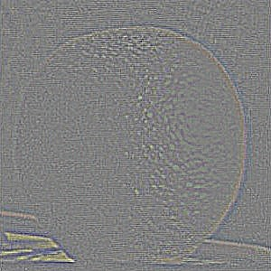
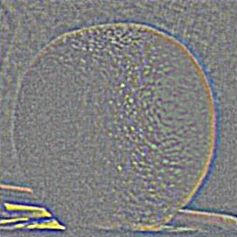
Summing all five Laplacian levels reconstructs the inputs. Maximum reconstruction error is 4.16 × 10⁻¹⁷ for Apple and 2.78 × 10⁻¹⁷ for Orange—effectively floating-point zero.
Oraple components at every level
A binary mask selects Apple on the left and Orange on the right. Its Gaussian stack softens that transition as σ increases.
HIGH FREQUENCIES · L0 · σ: 0 → 1.00
MEDIUM FREQUENCIES · L2 · σ: 2.24 → 4.58
LOW FREQUENCIES · L4 · σeff = 9.22
RECONSTRUCTION · SUM OF L0–L4
PART 2.4.1 / MULTIRESOLUTION BLENDING
Blend the boundary
at every scale.
A hard cutout chooses one source independently at every pixel. Multiresolution blending instead makes that choice separately within each frequency band, using a progressively blurred version of the same irregular mask.
Inputs and naive composite
The mask semantics are fixed before filtering: white is 1 and preserves Lotus; black is 0 and replaces that region with Lake. Thresholding the JPEG mask removes compression-gray pixels before its Gaussian stack is constructed.
Implementation
Lotus, Lake, and the binary mask each receive a five-level stack. This larger 690 × 719 example uses incremental σ = 2, 4, 8, 16, producing cumulative effective scales 0, 2.00, 4.47, 9.17, 18.44. No level is downsampled.
Bₗ = GₗMLₗLotus + (1 − GₗM)LₗLake
Iblend = ∑l=04 Bₗ
lotus_g = gaussian_stack(lotus, levels=5, base_sigma=2.0)
lake_g = gaussian_stack(lake, levels=5, base_sigma=2.0)
mask_g = gaussian_stack(mask, levels=5, base_sigma=2.0)
lotus_l = laplacian_stack(lotus_g)
lake_l = laplacian_stack(lake_g)
lotus_parts, lake_parts, blend_l = blend_laplacian_stacks(
lotus_l, lake_l, mask_g
)
blend = np.clip(np.sum(blend_l, axis=0), 0.0, 1.0)Masked contributions across scale
As in Part 2.3, the selected rows show L0, L2, L4, and the full reconstruction.
HIGH FREQUENCIES · L0 · σ: 0 → 2.00
MEDIUM FREQUENCIES · L2 · σ: 4.47 → 9.17
LOW FREQUENCIES · L4 · σeff = 18.44
RECONSTRUCTION · SUM OF L0–L4
Observation
The naive composite preserves both sources but exposes the mask as a cutout: color and brightness change abruptly at the lotus boundaries. Multiresolution blending keeps fine lotus texture localized through the high-frequency mask while spreading the larger blue-to-green transition across wider low-frequency masks. The final boundary is softer without uniformly blurring the lotus details or the lake ripples.
PART 2.4.2 / BELLS & WHISTLES
Atmosphere matching.
A mask-localized, low-frequency Lab color transfer harmonizes the two sources before they are combined with linear-light multiresolution blending.
Motivation
The basic blend deliberately retains Lotus's green and pink low-frequency atmosphere. Against the blue Lake, those broad colors can still reveal which source supplied a region even after the edge becomes soft. Matching the entire Lotus image would hide that difference, but it would also recolor the flowers and erase some of the painting's identity. The useful compromise is to alter broad color while retaining local detail.
Implementation
The method is a localized form of statistical color transfer: instead of matching every pixel, it matches the mean and standard deviation of the low-frequency Lab channels measured on the two sides of the mask boundary. This changes the broad lighting and color atmosphere while leaving the high-frequency flower and brushstroke detail available to restore afterward.
-
01Estimate local atmosphere
Blur both sources with
σ = 18. A 31-pixel ring just inside the white mask provides Lotus statistics; the neighboring ring outside it provides Lake statistics. -
02Match only low frequencies
In Lab space, shift Lotus low-frequency mean and variance toward Lake. Strength is
0.35for luminance and0.65for the two chroma channels. The original Lotus high-frequency residual is then added back. -
03Blend in linear light
Decode sRGB before convolution and addition, use six stack levels, then encode the final result back to sRGB. The sixth level increases the largest effective scale from
18.44to36.93.
C = Gaussian(ILotus, 18), D = ILotus − C
I′Lotus = LabMatch(C, ILake) + D
lotus_low = gaussian_blur(lotus, sigma=18.0)
lake_low = gaussian_blur(lake, sigma=18.0)
lotus_lab = cv2.cvtColor(lotus_low.astype(np.float32), cv2.COLOR_RGB2LAB)
lake_lab = cv2.cvtColor(lake_low.astype(np.float32), cv2.COLOR_RGB2LAB)
matched = (lotus_lab - source_mean) * color_scale + target_mean
strength = np.array([0.35, 0.65, 0.65])
harmonized_lab = lotus_lab + strength * (matched - lotus_lab)
harmonized_low = cv2.cvtColor(harmonized_lab, cv2.COLOR_LAB2RGB)
harmonized_lotus = np.clip(
harmonized_low + (lotus - lotus_low), 0.0, 1.0
)
lotus_g = gaussian_stack(
srgb_to_linear(harmonized_lotus), levels=6, base_sigma=2.0
)
lake_g = gaussian_stack(
srgb_to_linear(lake), levels=6, base_sigma=2.0
)
mask_g = gaussian_stack(mask, levels=6, base_sigma=2.0)
_, _, blended_levels = blend_laplacian_stacks(
laplacian_stack(lotus_g), laplacian_stack(lake_g), mask_g
)
enhanced = linear_to_srgb(np.sum(blended_levels, axis=0))Observation
A slightly gray, soft band remains visible around some blended boundaries. This is caused by the Gaussian mask rather than by a uniform loss of sharpness: near an edge, its values lie between zero and one, so the low-frequency blue Lake color and the green-pink Lotus color are averaged. Mixing substantially different hues reduces saturation and can therefore appear gray. The six-level result also reaches a larger effective scale of σ = 36.93, spreading that low-frequency transition across a wider area. High-frequency flower and brushstroke detail is still selected with a much sharper mask, but it sits on top of this broad color transition, which makes the edge look softer. This is the tradeoff for hiding a hard seam; a narrower mask stack would produce a crisper boundary but make the cutout easier to see.